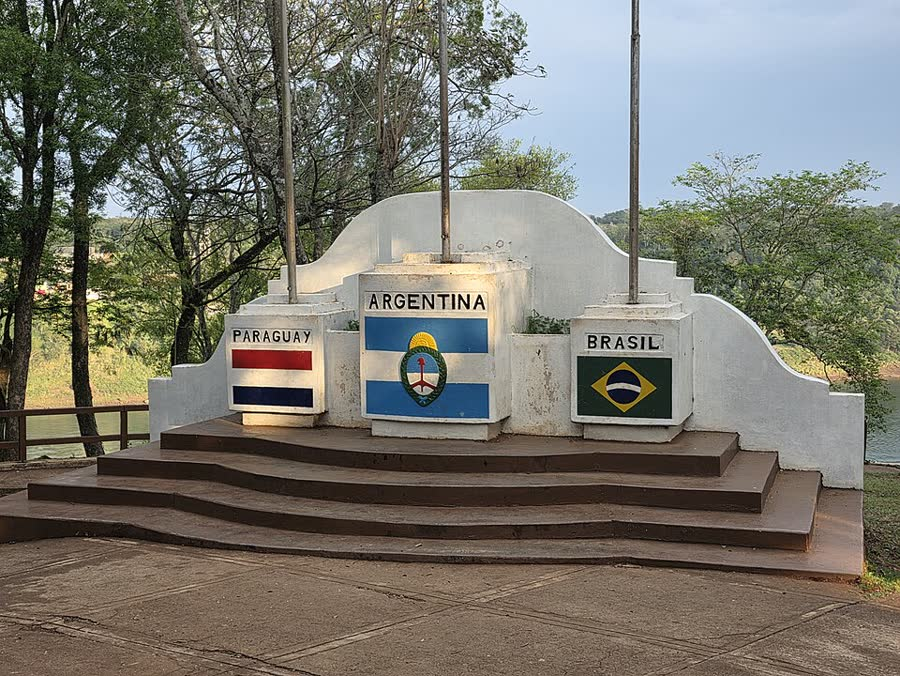
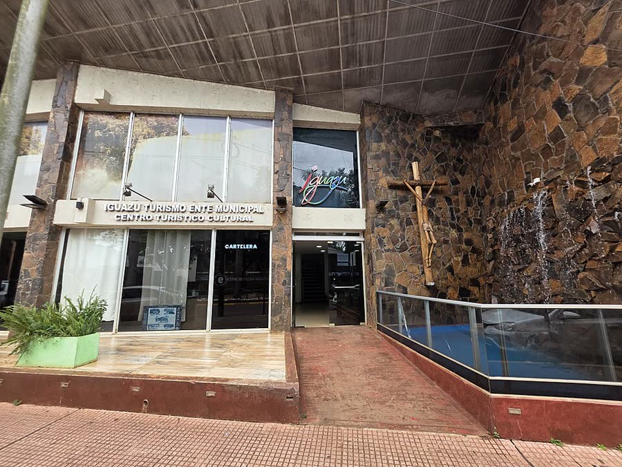
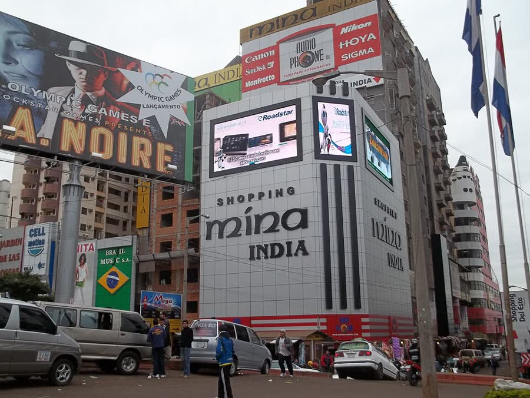
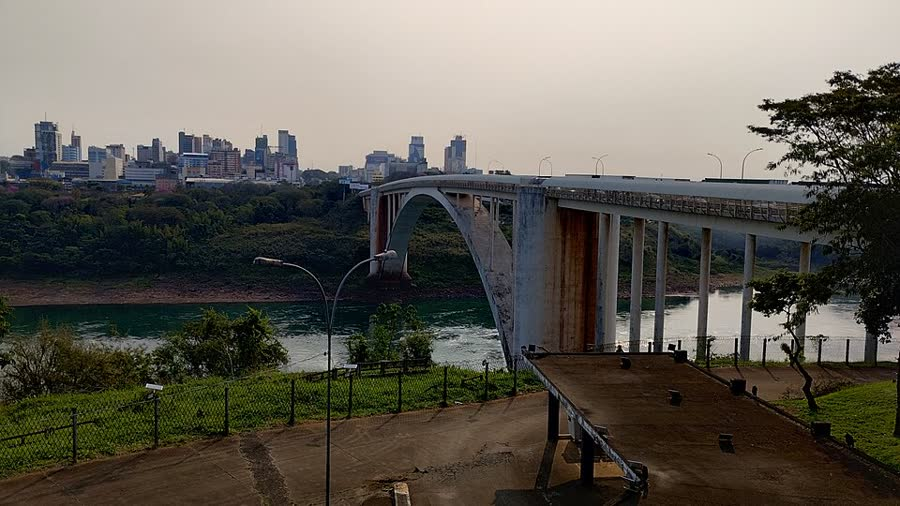
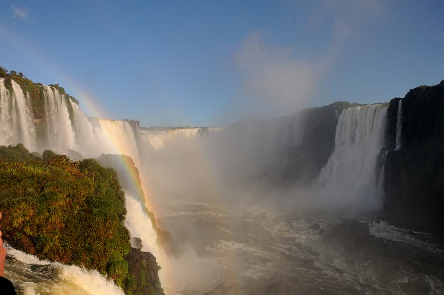
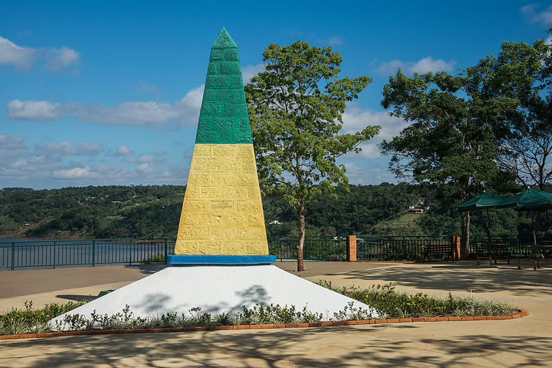
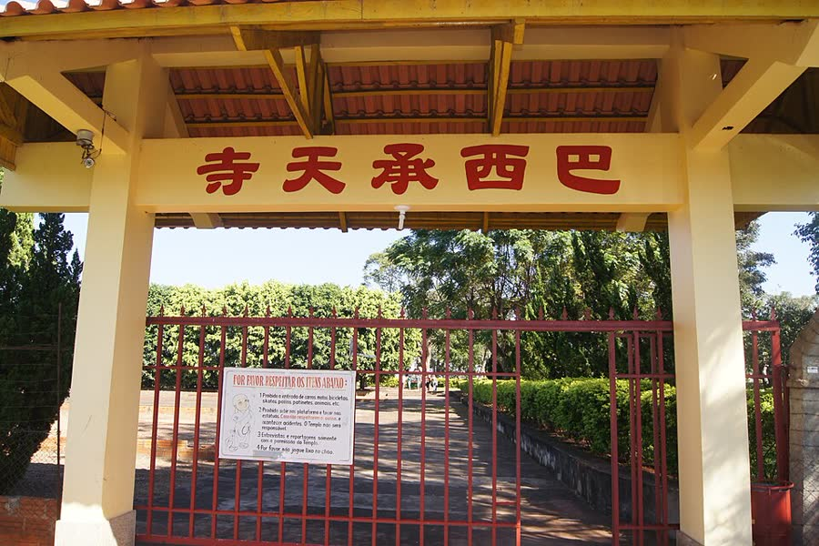
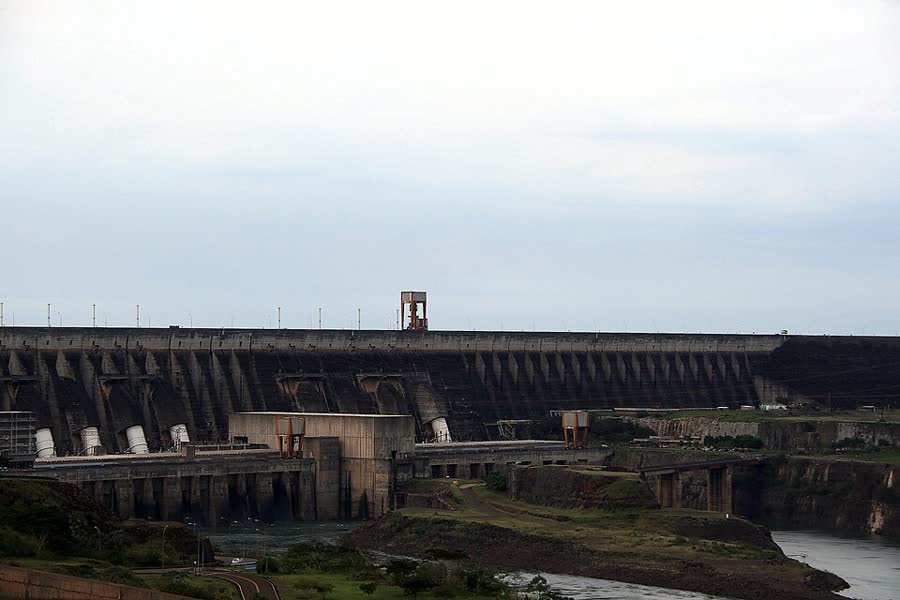

Carro reservado e hospedagem paga (Airbnb). Estimativa total: ≈ R$ 1.148 a 1.198 por pessoa. Ver gastos
Quem vai
Leandro e Cíntiacasal · quarto 2
Emerson e Alicecasal · quarto 1 (cama de casal)
Alisson, irmão da Alicequarto 1 (futon)
Divisão de quartos é só sugestão: a casa tem um quarto com cama de casal e futon e outro com cama de casal.
A fazer antes de viajar
Confirmar se o carro alugado pode entrar na Argentinaantes de sexta
Cada um conferir se o RG tem menos de 10 anosjá
Comprar ingresso das Cataratas com dia e hora (feriado lota)online
Cada um ver se a operadora tem internet na Argentina e no Paraguai (como)esta semana
Baixar o mapa offline de Foz, Ciudad del Este e Puerto Iguazúainda no Brasil
Roteiro
Qui08/10
Saída de SJC, 19h
Carro retirado às 15h. Volante: Cíntia 19h, Leandro 22h, Alisson 1h, Emerson 4h, Alice 7h.
Sex09/10
Argentina, Puerto Iguazú

Hito Tres Fronteras · Horacio Cambeiro, CC BY 4.0

Centro de Puerto Iguazú · Horacio Cambeiro, CC BY-SA 4.0
O carro não vai pra Argentina. Chegada em Foz 10h–11h: deixem o carro na casa, Uber até o TTU e ônibus pra Puerto Iguazú (detalhes em Estacionar e se deslocar). Check-in na casa a partir das 14h; cheguem entre 17h e 20h. Fila na aduana pode passar de 2h (app Puenty mostra ao vivo). Último ônibus de volta às 19h; depois só táxi ou remis.
Hito Tres Fronteraso dia todo · show de águas ~20h
Duty Free12h–21h
Casino Iguazúa partir das 14h
Feirinhahorário incerto (~9h–14h e 16h–23h)
Almoço: Mucha Previa, Perito Moreno 221confirmar se abre no almoço
Sáb10/10
Paraguai, Ciudad del Este

Centro de Ciudad del Este · Va de Carro, CC BY 3.0

Ponte da Amizade · Pedro Nardi, CC BY 4.0
Carro no estacionamento perto da aduana (Bismillah, ~50 m; fecha ~18h, perguntar a hora limite de saída) e ponte a pé. Chegada 8h30–9h. Comecem pelas lojas que fecham às 16h.
SA Shop7h–16h
Mega Eletrônicos6h30–16h
Nissei~6h30 a 15h–16h
Shopping Paris7h até ~18h
Shopping China7h–20h
CellShop9h–21h
New Zone7h–22h
Dom11/10
Foz do Iguaçu, saída às 20h

Cataratas, lado brasileiro · Josep M. Gracia, CC BY-SA 4.0

Marco das 3 Fronteiras · Zig Koch / MTur, domínio públicoParque das Aves · Deni Williams, CC BY 2.0

Templo Budista · Jonas de Carvalho, CC BY-SA 2.0
Café, malas no carro, check-out7h–7h40
Cataratas (trilha até a Garganta do Diabo)8h30–11h
Parque das Aves (em frente às Cataratas)11h15–13h
Almoço (Barracão, buffet)13h–14h
Templo Budista (grátis)14h30–15h30
Marco das 3 Fronteiras (show ~18h30)15h45–18h30
Jantar (Asmars, 4 Sorelle ou Dona Elvira)18h30–19h30
Saída pra SJC · volante: Cíntia, Leandro, Alisson, Alice, Emerson20h
Apertado no Parque das Aves: se quiserem mais tempo lá, cortem o Templo. Fechados no domingo: Restaurante Roque, Doce Pão e a Mesquita.
Seg12/10
Chegada em SJC ~11h
Devolver o carro até 16h (feriado).
Outros passeios em Foz
Não cabem no domingo, mas ficam de referência.

Itaipu · Cmasi, CC BY-SA 4.0
Itaipu Panorâmica (1h10–1h30)R$ 63
Roda-gigante Yup Star (compra online)R$ 59,90
Cataratas, lado argentino (dia inteiro)≈ R$ 240
Macuco Safari (barco nas Cataratas)R$ 384
Documentos
RG ou CIN físico, emitido há menos de 10 anosserve
Passaporte válidoserve
CNH, ou RG só no celularnão serve
Carro na Argentina: CNH, CRLV, Carta Verde e autorização da locadoraobrigatório
Se a Unidas não autorizar, deixem o carro em Foz e cruzem para a Argentina de ônibus, táxi ou Uber. No Paraguai o carro fica do lado brasileiro. Compras: cota de US$ 500 por pessoa; guardem as notas.
Internet na Argentina e no Paraguai
Em Foz o plano de vocês funciona normal. Na sexta (Argentina) e no sábado (Paraguai), sem pacote o roaming cobra por uso e sai caro: deixe "Roaming de dados" desligado até ter pacote ou chip local.
Claro pós (planos novos de 25, 30 ou 50GB)já incluso
Claro, plano antigo: diária Américas, 2GBR$ 39,90/dia
TIM: Passport Internet Américas, 5GB por 1 diaR$ 29,99
Vivo pós: Vivo Travel (planos V, Família e Selfie já incluem)ver no app
Chip Tigo no Paraguai, com documento≈ R$ 8 a 10
Celular com eSIM: Nomad Chip ou outro eSIM≈ US$ 20 / 3GB
Celular com dois chips: o chip local entra no 2º espaço e o do Brasil continua recebendo SMS do banco. Chip na Argentina não compensa para um dia: a loja exige registro e a ativação pode demorar horas. Quem tiver internet pode rotear para os outros. Claro: ligação grátis para *468. Preços vistos em 07/10; confirmem com a operadora.
Carro
SUV MédioReservado T-Cross, Kicks ou Creta · Unidas
Retirada / devolução08/10 15h · 12/10 15h
LojaRua Andorra, 500, SJC
Pagamento da reservaconfirmado
Caução na retiradaR$ 2.200 (pode mudar)
Aluguel (4 diárias + proteção)R$ 632,50
Fronteiranão cruza (Argentina de ônibus, Paraguai a pé)
Na retirada: CNH válida e cartão de crédito físico no nome de quem reservou, para a caução. Não vale débito, pré-pago, virtual nem pagamento por aproximação. Tenham limite livre: a caução pode ser maior que a informada. Atrasar a devolução cobra diária extra. A retirada vale até 2h depois das 15h.
Motoristas: decidimos não incluir motorista adicional; o rodízio fica por conta do grupo. Só quem reservou está no contrato, então todo mundo dirige com cuidado redobrado. Central de Reservas: 0800 6 121 121.
Hospedagem
Casa Privativa em Foz (Airbnb, anfitriã Camila)Confirmada Rua Mário Romão Rorato, Foz do Iguaçu · mapa
Datassex 09/10 a dom 11/10
Check-in / check-outa partir de 14h · até 10h
Entradasozinhos, cofre de chaves
Chegada avisada à Camilasex 09/10, 17h–19h
Valor (≈ R$ 112,50 por pessoa)R$ 562,52 · pago
2 quartos com ar, 3 camas, 1 banheiro, cozinha completa, edícula com churrasqueira. Garagem: a Camila confirmou que o SUV cabe (já entrou uma Amarok); a casa tem alarme e câmeras, e a obra da frente tem segurança, então a rua também é tranquila. Perto de Itaipu e do Templo Budista, ~7 km da Ponte da Amizade. Instruções de entrada no app do Airbnb.
Distâncias da casa até os nossos destinos (de carro, sem trânsito)
🇵🇾 Paraguai: Ponte da Amizade6 km · ~11 min
🇦🇷 Argentina: Ponte Tancredo Neves22 km · ~26 min
📍 Marco das 3 Fronteiras23 km · ~27 min
Cataratas e Parque das Aves23 km · ~26 min
Centro de Foz9 km · ~13 min
Templo Budista5 km · ~8 min
Itaipu9 km · ~19 min
Shopping Catuaí9 km · ~14 min
O que fazer à noite
Sexta (Argentina): show de águas no Hito Tres Fronteras (~20h), Duty Free até 21h, Casino Iguazú, feirinhasex
Sábado: Roda-gigante Yup Star (até 20h30) ou jantar com show na Rafain Churrascaria (confirmar horário)sáb
Domingo: show do Marco das 3 Fronteiras às 18h30, antes de pegar a estrada às 20hdom
Reserva antiga (Booking, Rua das Rosas) cancelada: o anfitrião não respondia.
O carro não cruza a fronteira. Argentina de ônibus, Paraguai a pé, e o SUV só roda em Foz.
Em cada local, o primeiro link abre o Waze já com a rota e o segundo, o Google Maps. Preços e horários vêm de guias de datas variadas: confirmem por telefone.
Sexta 09/10, Argentina sem carro
Carro na casa (alarme e câmeras; a Camila confirmou que cabe na garagem e que pode ficar na frente). Evita Vila Portes à noite. CasaMaps
Ida: Uber da casa até o TTU, R$ 20–40 (estimativa). O ônibus internacional sai de um ponto ao lado do TTU, não de dentro. Crucero del Norte de hora em hora, 7h–18h; Rio Uruguay 7h30–18h30. R$ 10–30 por pessoa por trecho; aceita real, peso e dólar; ~40 min. Todos descem na imigração (~10 min). Levem RG com menos de 10 anos. TTUMaps
Volta: último ônibus de Puerto Iguazú às 19h (uma fonte cita até 21h05, conflito). Depois, remis ou táxi com preço combinado, ~R$ 120 por carro; em 5 pessoas são 2 carros, ~R$ 240. Uber, 99 e DiDi não funcionam na Argentina. Hito Tres FronterasMaps
Custo estimado pros 5: R$ 200 a R$ 600, conforme a volta seja de ônibus ou de táxi. Sexta não é feriado na Argentina; o de lá é segunda 12/10.
Sábado 10/10, Paraguai a pé
Estacionamentos Bismillah, Rua Oswaldo Cruz (o número aparece como 267 ou 368: confirmar), ~50 m da aduana, 1.200 vagas, manobrista, câmeras 24h. Tarifa de SUV e horário de sábado não confirmados. BismillahMaps
Alternativa: Estacionamento Fortaleza, Fagundes Varela 118, ~200 m, coberto e com câmeras. FortalezaMaps
Faixa geral R$ 20–45 por dia. Um estacionamento da região limita a retirada às 16h: perguntem o limite antes de deixar o carro. Evitem vaga de rua e zona azul (risco de furto) e Vila Portes à noite.
Domingo 11/10, Foz, até 4 trocas de vaga
1. Cataratas, Centro de Visitantes (8h30). Estacionamento R$ 65 por dia, 7h–19h, dá pra pagar online com QR. Em feriado lota no meio da manhã: cheguem antes das 9h. O ônibus interno até as trilhas está no ingresso. CataratasMaps
2. Parque das Aves, em frente, com estacionamento próprio (preço varia nas fontes, de grátis a ~R$ 20). Se aceitar quem só vai às Cataratas, uma vaga serve aos dois e poupa os R$ 65: liguem pra confirmar. Parque das AvesMaps
3. Almoço no Barracão, Av. Silvio Américo Sasdelli, 1010. Vaga própria e na rua (um relato de furto, outro de dificuldade em feriado). BarracãoMaps
4. Templo Chen Tien, estacionamento grátis na entrada, 9h30–16h30. 11/10 não é o primeiro domingo do mês, então deve abrir; confirmem em (45) 3524-5566. TemploMaps
5. Marco das 3 Fronteiras, estacionamento grátis. Abre às 14h pelo site oficial; show às 18h30. MarcoMaps
6. Jantar no Centro: Shawarmaria Asmars (R. Tarobá, 962) e Cantina 4 Sorelle (R. Almirante Barroso, 1336) ficam perto um do outro, sem estacionamento próprio achado. Um estacionamento pago no Centro serve aos dois (~R$ 25 por dia, dado de cerca de um ano). AsmarsMaps4 SorelleMapsRota do domingo inteira no Google MapsO Waze só aceita um destino por link: abram uma parada de cada vez.
Ligar antes de ir
Bismillah: tarifa de SUV e horário de retirada no sábado.
Parque das Aves: aceita quem só vai às Cataratas?
Templo Chen Tien: abre no feriado?
Crucero del Norte (crucerodelnorte.com.ar): ponto de embarque e último ônibus de volta.
Mapas
Toque no nome para abrir a rota no Waze, ou em Maps para o Google Maps. Baixem o mapa offline ainda no Brasil: lá não tem internet.